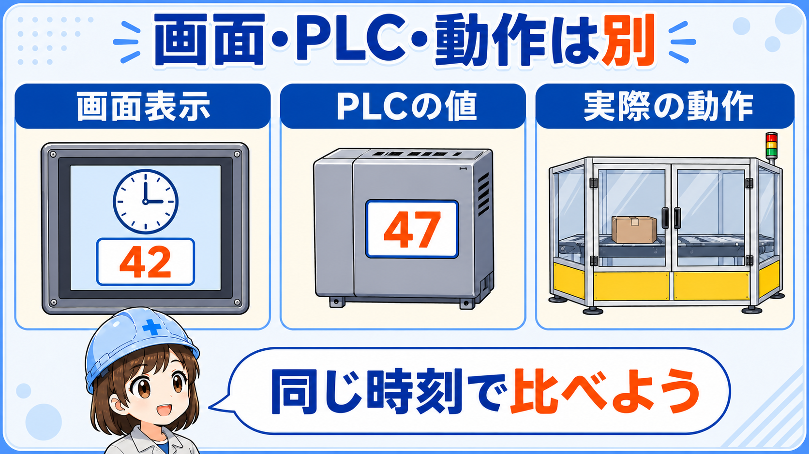
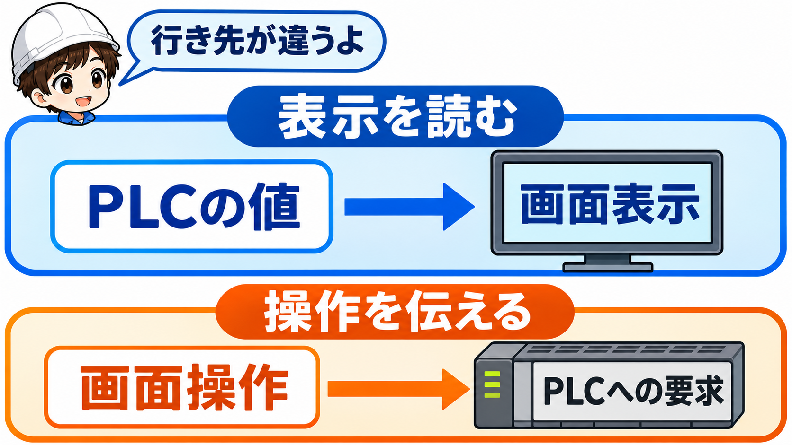
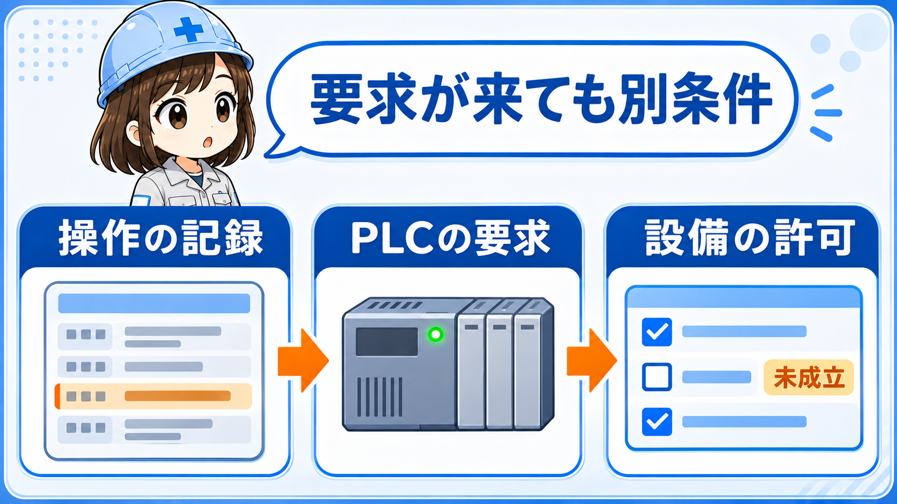

タッチパネルは「見える化」と「操作」の入口
最終内容更新：
GOTは三菱電機の表示器（HMI）の製品名です。タッチパネルには、PLCの値などをランプや数値で表示する役割と、運転や設定変更などの要求を扱う役割があります。画面に見えていること、PLCが持っている情報、実際の機械の状態は同じとは限りません。


後輩画面が42のままなら、機械も止まったんですか？

先輩画面の数字だけでは決められないよ。まず同じ対象のPLCの値と、それぞれの観測時刻をそろえて見よう。
PLCとタッチパネルの信号の流れ
表示の例：PLCの温度データを参照して、画面に数値を表示します。見比べるときは、画面の対象設備・参照先・単位・小数点・換算をそろえます。たとえば生の格納値と、画面で換算した数値はそのまま比べられません。GOT内部の情報を表示する部品もあります。
操作の例：運転ボタンがPLCに要求を伝える設計の場合、許可やインターロックなどの条件をPLC側で判定してから出力する構成があります。このほか、画面を切り替えるだけのボタンもあります。押された表示、PLCの要求、運転完了は別です。

GOT2000のGT27／GT25には、ランプ表示、数値表示・入力、タッチスイッチなどがあります。以下の確認は考え方の例です。画面部品の設定、接続先、ログの有無や見られる情報は、型式や設備のプロジェクトによって変わります。
表示部品と操作部品の違い
ランプ・異常表示
どの状態を参照するか。「自動モード」「運転要求」「運転中」「完了」のどれかを画面名だけで決めない。
数値表示
どのデータを、どの単位や小数点位置で表示するか。現時点の値か、保持された値・履歴かも分ける。
操作スイッチ
PLCに書き込むか、押している間だけか、押すごとに切り替えるか。画面遷移だけの場合もある。見た目からは判別しない。
設定値入力
書込先、単位、入力できる範囲、変更権限、適用される条件。ここでは変更せず、仕様や履歴を読む。
画面を見られることと、操作できることも同じではありません。GOT2000では設定によって画面や部品の表示を制限できる例があります。画面側の権限・ボタンの有効条件と、PLC側のモードや許可条件は分けて確認します。
画面表示が止まったとき：同じ値を比べる
- 画面全体が真っ暗：既存の状態表示や記録で電源・画面消灯の有無を分けます。資料上の電源仕様（24V DC機種ならその供給）を担当者と確認します。盤を開ける測定やコネクタの抜き差しはここでは行いません。
- 画面は見える：対象機器、画面名、症状の時刻、通信異常の表示や履歴を控えます。複数の値が同時に変わらないのか、特定の一項目だけかで次に見る範囲が違います。
- 一項目の値が止まる：許可された読み取り専用の記録・モニタを使い、同じ対象と同じ時点の値を比較します。画面内の時計が進むだけでは、その欄のPLC値が更新された証拠になりません。
画面は42のまま、PLCの同じ値は47へ変化
画面側の参照先・換算・更新条件を確認。複数項目に及ぶなら通信記録も照合。画面とPLCが違うだけで、通信故障と断定しない。
画面もPLCの値も同じ値で変わらない
値が変わるはずだった根拠を、設備の動作やセンサーの既存記録と照合。設備が動いていたのに値が変わらなければ、入力やPLC内で値を作る条件を確認。
例としてGT27／GT25には、条件を満たすプロジェクトでシステムアラームに通信エラーを表示できるものがあります。画面に表示がないことだけで通信正常とは判断しません。機種・接続構成・エラーの履歴を、使える既存資料で確認します。
操作した記録があるのに動かないとき
「運転を押したのに動かなかった」という記録を受けたら、押し直さず、同じ時刻の画面の操作記録、PLCへ要求が届いた記録、設備の許可条件を分けます。記録がある範囲だけで判断し、操作ログが残らない設備では「不明」とします。

- 操作の記録はあるが、PLCに要求が届いたことを確認できない：読む範囲で、書込先・操作可能な権限や条件・通信・要求の保持時間を照合。短い要求を後から見ただけでは、出なかったと断定できません。
- 要求が届いた記録はあるが、設備は動かなかった：同時刻の自動／手動モード、運転許可やインターロック、異常の記録を見る。出力や後段の機器の確認が要る場合は、動作の再現をせず設備担当へ引き継ぐ。
後輩ボタンが点灯していたなら、要求は通ったんですよね？
先輩点灯が「押した表示」なのか「PLCの許可」なのかで意味が変わるよ。項目の定義と同じ時点の記録を見よう。
確認のために設備を動かさない
機械の状態が不明なときにボタンを押し直さないでください。PLCモニタを使うのは資格・権限がある担当者が設備手順で認められた場合のみです。デバイスの直接書き込み、強制入出力、インターロックや保護の解除、設定変更は行いません。盤内・配線や実際の動作確認が必要なら、定められた安全手順に従える設備担当者へ引き継ぎます。
引き継ぎには「何を・いつ・どこで」を残す
画面名と設備名、見た時刻と情報源、表示値とPLC値、設備の状態を並べます。片方の時刻が不明なら無理に同じ時点として扱いません。先に機種を確定し、GOTの画面データとPLCプログラムを組み合わせて、どちらかだけ更新・復元した履歴がないか照合すると、参照先や要求先の行き違いを疑う根拠になります。
メーカー公式資料
公式資料確認：。機種例は三菱電機 GOT2000のGT27／GT25です。
- 三菱電機「GOT2000シリーズ 仕様一覧」：ランプ、数値表示・入力、タッチスイッチなどの機種別対応。
- 三菱電機 FAQ No.25062「GT27、GT25の通信エラーをGOT本体で確認する方法について」：GT27／GT25のシステムアラームと、通信エラーの表示条件。
- 三菱電機 FAQ No.23402「GOT2000シリーズのセキュリティ機能について」：設定に応じた画面やオブジェクトの表示制限。
あわせて読みたい関連記事
タッチパネルはPLC、I/O、デバイス、ロボシリンダーなどの制御機器とつながります。周辺の基礎も読むと、画面の役割が整理しやすくなります。